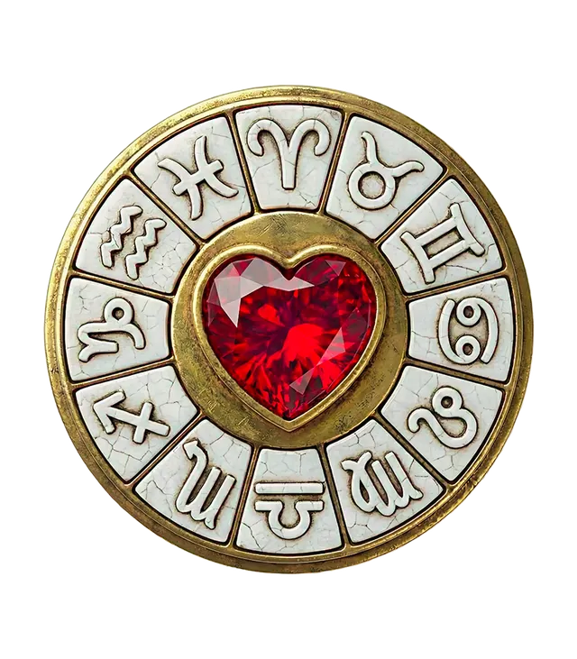

Grandes questions
Quel signe aura le plus de chance en 2027 ?
Par MadeleineMis à jour le 31 octobre 20265 min de lecture

En bref
En 2027, le Lion est le plus favorisé jusqu'au 26 juillet grâce au passage de Jupiter dans son signe, puis la Vierge quand Jupiter y entre. Le Sagittaire et le Bélier profitent d'un premier semestre porteur, le Taureau et le Capricorne d'un second semestre plus fluide.
En 2027, le signe le plus favorisé par le ciel est le Lion jusqu'à l'été, puis la Vierge à partir du 26 juillet, date à laquelle Jupiter, la planète de la chance et de l'expansion, change de signe. Les signes de Feu (Bélier, Sagittaire) profitent aussi d'un premier semestre porteur, et les signes de Terre (Taureau, Capricorne) d'un second semestre plus fluide. Voici pourquoi, et ce que l'année réserve à chacun.
Comment l'astrologie mesure-t-elle la chance d'une année ?
En astrologie, la « chance » d'une année se lit surtout à travers Jupiter. Cette planète met environ douze ans à faire le tour du zodiaque et reste donc à peu près un an dans chaque signe. Là où elle passe, elle apporte traditionnellement de l'élan, des opportunités, de la confiance et de la croissance. Les signes qu'elle traverse, et ceux avec lesquels elle forme des aspects harmonieux, sont considérés comme favorisés.
On regarde aussi Saturne, planète de la structure et des leçons, qui demande des efforts aux signes qu'elle traverse ou qu'elle met en tension. Une année « chanceuse » n'est donc jamais une année sans travail : c'est une année où les efforts sont mieux récompensés.
Le ciel de 2027 en quelques repères
- Jupiter est en Lion du début de l'année au 26 juillet 2027 (rétrograde jusqu'au 12 avril), puis entre en Vierge le 26 juillet.
- Saturne reste en Bélier toute l'année (rétrograde du 9 août au 23 décembre).
- Mars est rétrograde du 10 janvier au 1er avril 2027, d'abord en Vierge puis en Lion.
- Uranus est en Gémeaux, Neptune en Bélier, Pluton en Verseau.
Toutes ces dates sont calculées sur les positions réelles des planètes. Vous les retrouverez en détail dans notre page sur le ciel de 2027.
Le podium des signes les plus chanceux en 2027
1. Le Lion : une première moitié d'année en pleine lumière
Jupiter traverse votre signe jusqu'au 26 juillet. C'est le passage le plus favorable que l'on puisse recevoir : confiance, visibilité, envie de créer, rencontres qui ouvrent des portes. Le premier trimestre demande un peu de patience, car Jupiter est rétrograde jusqu'au 12 avril et Mars rétrograde entre dans votre signe en février : les projets mûrissent avant d'éclore. Le printemps et le début de l'été sont votre fenêtre de tir. Lire l'horoscope 2027 du Lion.
2. La Vierge : la relève de l'été
À partir du 26 juillet, Jupiter entre dans votre signe pour environ un an. Le second semestre ouvre un nouveau cycle de croissance : reconnaissance professionnelle, projets de santé ou de bien-être, envie de vous développer. Mars rétrograde dans votre signe en début d'année vous aura appris à réajuster vos plans : vous partez sur des bases plus solides. Lire l'horoscope 2027 de la Vierge.
3. Le Sagittaire et le Bélier : le trigone de Jupiter
Jusqu'à l'été, Jupiter en Lion forme un aspect harmonieux (un trigone) avec les autres signes de Feu. Le Sagittaire, dont Jupiter est la planète maîtresse, en profite pleinement : voyages, études, projets d'envergure. Le Bélier reçoit aussi cet élan, tempéré par la présence de Saturne et de Neptune dans son signe, qui lui demandent rigueur et clarté.
Ce que 2027 réserve aux autres signes
Taureau
Un début d'année qui demande de la patience, puis un second semestre plus fluide quand Jupiter rejoint la Vierge, signe de Terre ami. Les projets concrets avancent. Horoscope 2027 du Taureau.
Capricorne
Saturne, votre planète maîtresse, travaille en Bélier : l'année demande de reconstruire certaines fondations, notamment personnelles et familiales. Jupiter en Vierge à partir de l'été vous offre un soutien précieux. Horoscope 2027 du Capricorne.
Gémeaux
Uranus dans votre signe continue de bousculer vos habitudes et de vous pousser à vous réinventer. Jupiter en Lion stimule vos échanges, vos déplacements et vos liens avec votre entourage proche au premier semestre.
Cancer
Une année de consolidation, notamment financière quand Jupiter est en Lion. Saturne en Bélier vous demande de clarifier vos ambitions professionnelles.
Balance
Saturne en Bélier, votre signe opposé, met vos relations à l'épreuve de la vérité : les liens solides se renforcent, les autres se clarifient. Jupiter en Lion favorise les amitiés et les projets collectifs.
Scorpion
Jupiter en Lion éclaire votre vie professionnelle et votre réputation au premier semestre. Une belle année pour progresser, à condition d'accepter d'être vu.
Verseau
Jupiter en Lion, votre signe opposé, met les relations et les partenariats au centre du premier semestre. Pluton dans votre signe poursuit une transformation profonde de votre identité.
Poissons
Jupiter, votre maître traditionnel, entre en Vierge, votre signe opposé, au mois de juillet : le second semestre met l'accent sur le couple et les associations. Neptune, votre maître moderne, poursuit son chemin en Bélier, ce qui vous pousse à affirmer vos rêves.
La chance se construit
Un transit favorable n'est qu'une porte entrouverte : encore faut-il la pousser. Les signes moins « favorisés » vivent souvent des années de construction qui préparent les réussites suivantes. Pour une lecture personnalisée, il faut regarder dans quelle maison de votre thème passe Jupiter : votre thème astral vous le dira. Et pour une vue d'ensemble de l'année, consultez l'horoscope 2027 des douze signes.
Questions fréquentes
Quel signe aura de la chance en 2027 ?
Le Lion jusqu'au 26 juillet, grâce au passage de Jupiter dans son signe, puis la Vierge, quand Jupiter y entre. Le Sagittaire et le Bélier profitent aussi d'un premier semestre favorable.
Quand Jupiter change-t-il de signe en 2027 ?
Jupiter quitte le Lion pour entrer en Vierge le 26 juillet 2027. Il restera en Vierge environ un an, avant de rejoindre la Balance.
Quel signe va avoir une année difficile en 2027 ?
Aucun signe n'est condamné. Le Bélier, la Balance et le Capricorne sont les plus concernés par Saturne en Bélier, qui demande des efforts, de la clarté et de la patience. Ce sont des années de construction plutôt que de malchance.
L'horoscope chinois 2027 dit-il la même chose ?
Non, c'est un autre système. L'année 2027 est celle de la Chèvre de Feu dans l'astrologie chinoise, à partir du 6 février 2027. Retrouvez-la dans notre horoscope chinois 2027.